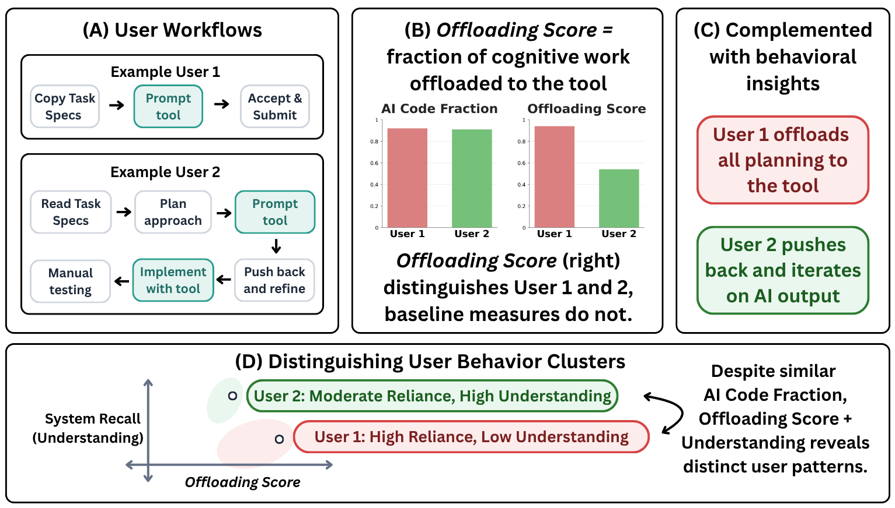
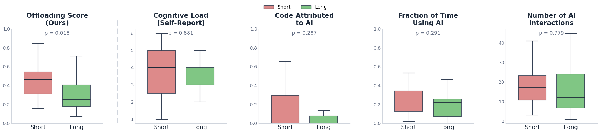
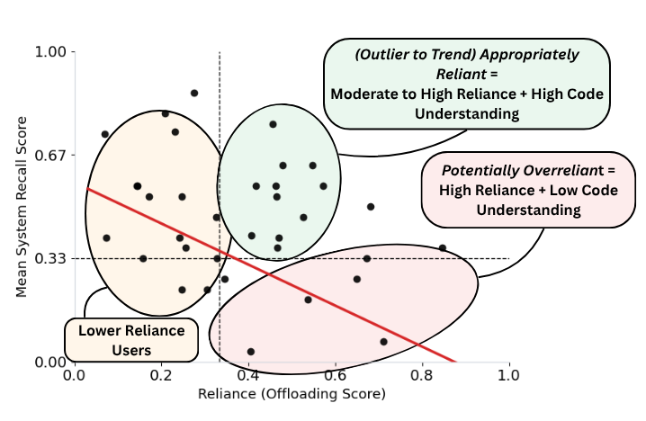

Offloading Score: Measuring AI Reliance
through Counterfactual Workflows
We introduce a way to measure AI reliance by looking at where cognitive effort goes in a real workflow. Using a controlled user study, we show that this measure captures shifts in reliance under time pressure, and helps reveal different patterns in how people work with AI tools.
A lot of existing work treats reliance as a fairly simple event: did the user accept the AI's suggestion, or did they reject it? That framing made sense for earlier AI systems, where the tool produced a recommendation and the user made a decision around it. But that is not really how people use contemporary AI tools. These interactions are conversational, multi-turn, and often woven through the whole task. Two users can end up with the same amount of AI-generated code, but get there in very different ways: one might break the task down, ask for help on sub-components, and check each step; another might hand the whole problem to the model at the start. A usage count makes these look much closer than they are.
Self-reports give us a bit more texture, but they come with their own problems: they are subjective, noisy, and hard to collect every time someone uses a tool.
What gets lost in both approaches is the distribution of effort over the interaction itself.

At some point, the thing we wanted to measure was not just whether the AI was used, but how much cognitive effort had moved from the person to the tool.
So instead of asking only whether the user accepted an output, we ask a more counterfactual question: how much work would this person have had to do if the tool had not been there? If the answer is "a lot more," then the interaction involved high reliance. If the answer is "roughly the same amount," then the tool was present, but not carrying much of the cognitive load.
We make this concrete by looking at the workflow step by step. Whenever a user seeks AI assistance, we estimate what an 'average' user would have had to do to reach that same sub-goal without the tool. The steps saved, relative to the full human-only counterfactual, give us the offloading score.
The score is only one part of the picture. We also label each AI-assisted step to understand how the reliance shows up: what kind of cognitive work is being offloaded — Planning Execution Feedback Control — and how the user treats the AI's output — Directly Reuse Adapt & Apply Pushback Reject.
In practice, the calculation has three moving parts.
First, we record a developer's session — screen, keystrokes, clicks — and automatically induce a step-by-step workflow from it. Each step is meant to capture a meaningful unit of progress: "sent prompt asking AI to design the database schema", or "manually debugged CSS layout issues."
Second, for each AI-assisted step, we simulate what an average developer might have done without the tool. This is not a full alternate universe for the whole task. It is a short-horizon simulation: what would it take to reach this same local sub-goal?
Third, we turn that into a score:
A score of 0 means the observed workflow did not save steps relative to the human-only version. A score close to 1 means most of the work for those sub-goals was effectively offloaded. For a concrete sense of what this looks like, see the examples below.
We validate the offloading score through a user study. The basic test is simple: prior work suggests that time pressure increases reliance on external tools. So if our measure is capturing the right thing, it should move in that direction when people are rushed.
We ran a controlled study with 40 experienced developers. Everyone worked on programming tasks involving functional web apps, with the same tools available. The main difference was time: half had 1 hour, and half had 4 hours.
The offloading score was significantly higher in the time-pressured group (+43%, p = 0.018). Two common baselines — the fraction of AI-generated code retained, and self-reported cognitive load — did not significantly separate the two conditions.
We also check the pieces that make the score work: whether the counterfactual simulations are plausible, and whether the human and LLM annotations for process and output-use labels are reliable.

Over 85% of the generated counterfactual steps were rated as plausible by participants. LLM-as-judge annotations for the process and output-use labels matched human annotators at 80–81% agreement.
Not necessarily. This is the part that matters: reliance is not automatically good or bad. The offloading score tells us how much effort was offloaded. Whether that is desirable depends on what the user was trying to get out of the interaction.
To see this more clearly, we combined the offloading score with a measure of system recall. After the task, we asked participants questions about the system they had built: design decisions, implementation details, and how the pieces fit together.
High offloading score, low system recall. These users delegated heavily, but did not retain much understanding of what had been built. In interviews, several said they knew how to do the task themselves but used the tool out of habit or to move faster — and in some cases were not even aware of features the AI had quietly included.
Moderate-to-high offloading score, high system recall. These users leaned on AI for things they did not already know how to do, but stayed engaged enough to understand the result. The tool seemed to function more like a learning scaffold than a shortcut. One participant described "not wanting to limit themselves to one line of thinking" and using the model in a back-and-forth planning loop.
Smaller offloading scores. In interviews, this often seemed less like a deliberate preference for independence and more like limited familiarity with what the tool could do. When shown examples of alternative workflows, several participants said they would have used the tool more if they had known.

The offloading score is not meant to decide whether reliance is bad. It gives us a way to notice when cognitive effort has moved, and then ask what that movement meant in context.
Two moments from real, anonymized sessions in our user study. Each workflow contains a mix of human and AI-assisted steps. Click any highlighted step to see the human-only alternative we estimate for that moment.
Task: Build a web-based game with a mobile-responsive UI. The user has finished the core logic and is now trying to make the interface work on smaller screens.
- Open the implementation plan / notes summarizing the mobile-responsiveness fixes and keep that window visible for reference.
- Use VS Code search to find UI/layout sources — open index.css plus component files that contain the controls and board layout (e.g., Controls.tsx, Board.tsx, App.css).
- Edit index.css to add mobile-targeted rules: add a
@media (max-width: 600px)block that adjusts root spacing variables, sets the main container to column flow, and reduces paddings/margins. - Update controls component styles so the control group stacks vertically on small screens and buttons expand to 100% width within that breakpoint.
- Adjust board/container styles to preserve aspect ratio on narrow viewports — set
max-width: 100%, use responsive heights, and handle overflow. - Run the dev server and open the app in browser; use DevTools Device Toolbar at common mobile widths (375×667, 414×896) to inspect the layout.
- Interact with the board and controls in responsive DevTools view, noting issues; iterate on CSS edits until controls and board behave correctly on small screens.
- Run linting and tests (
npm run lint,npm test) and fix any failures introduced. - Create a descriptive commit and push the branch.
npm test to check for regressions and confirm the build passes.Task: Build a recipe finder app using the Spoonacular API. The user needs to add a "Generate" button that fetches recipes and displays them in the app.
- Open the Spoonacular API docs and locate the recipe search endpoint. Note required query parameters, response format, and how the API key is passed.
- In VS Code open App.jsx and decide where to add UI and state: plan to add a "Generate" button, a search input, and a recipe list.
- Add React state hooks:
recipes(array),loading(boolean),error(string), andquery(string). - Implement a
searchRecipesfunction: set loading true; build the request URL using the API key from env; callfetch(url), awaitresponse.json(), set recipes; catch errors. - Wire the UI: add onChange to the input, add a Generate button with
onClick={searchRecipes}, and add conditional rendering for loading, error, and a mapped list of recipe cards. - Save App.jsx and restart the dev server so that environment changes are picked up.
- Open the app in browser, enter a query, click Generate, watch the network tab, and confirm recipes render correctly.
.env.local if needed; restart dev server and verify recipes render correctly.Any new measure should invite some skepticism. These are the concerns we think about most often. There is a lot more work to be done here, so please reach out if any of these directions are interesting to you.
But what if the estimated counterfactual steps don't reflect how someone would solve the sub-task(s)?
We use human-only counterfactuals to approximate what an average developer would do to reach the same sub-goal without the tool. This is a reasonable place to be skeptical. We evaluate these counterfactuals using a dataset of workflows from prior work, and in our user study participants rated over 85% of generated counterfactual steps as plausible. We also expect this part of the method to improve as workflow induction, user modeling, and simulation methods get better.
But how do you account for differences in work styles, shouldn't the counterfactual be personalized?
In principle, yes. A senior engineer and a junior developer might take very different paths to reach the same sub-goal without AI, and a single "average user" counterfactual will not capture all of that. We use a general counterfactual because it keeps the measure reusable across contexts, and because personalized workflows estimated from limited session history can be very noisy. But adapting the offloading score to individual baselines is an important next step.
But what if this only works for coding tasks?
Our user study focuses on 40 experienced developers working on programming tasks, largely because coding is one of the places where AI agents are already widely used. But the framework itself is not specific to code. In principle, any setting where we can induce a workflow and estimate a human-only alternative could work. That still needs empirical validation.
But what if cognitive effort is not always visible in on-screen actions?
Workflow steps only capture what is externally visible. A user might sit quietly thinking through a design before typing anything, and that effort will not appear in the trace. So the measure treats observable steps as a useful but imperfect proxy for cognitive effort. Our hope is that this still gives users a signal they can reflect on, and gives model developers a way to design incentives that reduce harmful forms of overreliance.
Citation
@article{padmakumar2026offloading,
title = {Offloading Score: Measuring {AI} Reliance through
Counterfactual Workflows},
author = {Padmakumar, Vishakh and Ibrahim, Lujain and Wang, Zora
and Wang, Jennifer and Liao, Q. Vera and Yang, Diyi},
note = {Unpublished},
year = {2026},
}